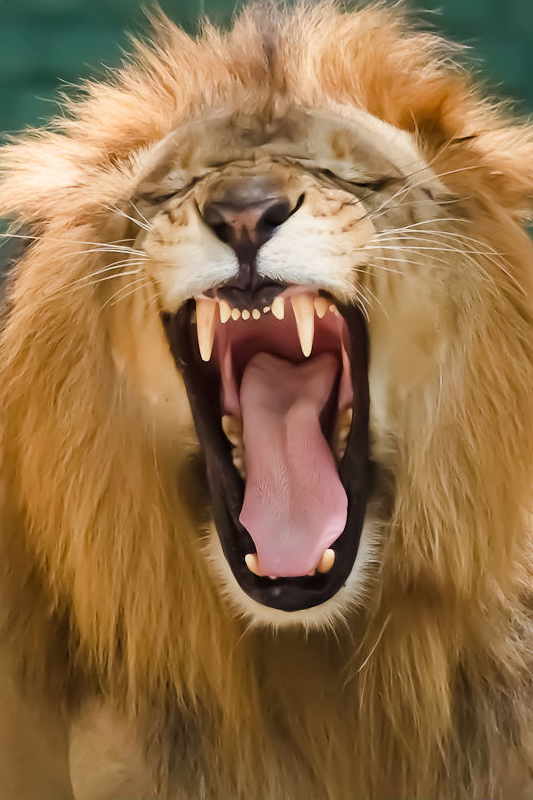
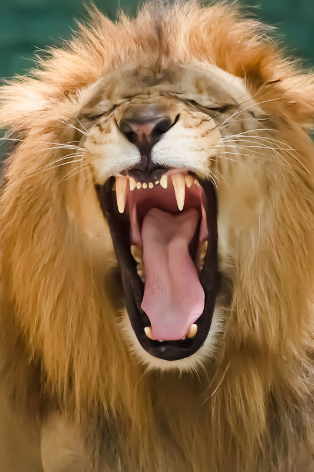
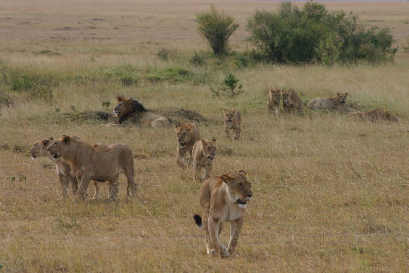
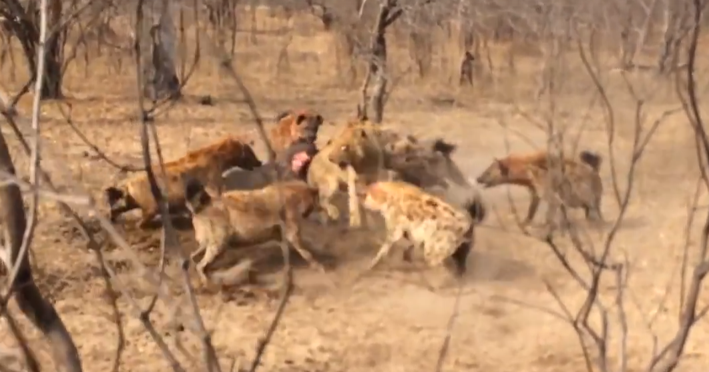

Lions spend much of their time resting; they are inactive for about 20 hours per day. Although lions can be active at any time, their activity generally peaks after dusk with a period of socialising, grooming and defecating. Intermittent bursts of activity continue until dawn, when hunting most often takes place. They spend an average of two hours a day walking and 50 minutes eating.
Group Organization
The lion is the most social of all wild cat species, living in groups of related individuals with their offspring. Such a group is called a "pride". Groups of male lions are called "coalitions". Females form the stable social unit in a pride and do not tolerate outside females. Membership only changes with the births and deaths of lionesses, although some females leave and become nomadic. The average pride consists of around 15 lions, including several adult females and up to four males and their cubs of both sexes. Large prides, consisting of up to 30 individuals, have been observed. The sole exception to this pattern is the Tsavo lion pride that always has just one adult male. Male cubs are excluded from their maternal pride when they reach maturity at around two or three years of age
The area occupied by a pride is called a "pride area" whereas that occupied by a nomad is a "range". Males associated with a pride tend to stay on the fringes, patrolling their territory. The reasons for the development of sociality in lionesses – the most pronounced in any cat species – are the subject of much debate. Increased hunting success appears to be an obvious reason, but this is uncertain upon examination; coordinated hunting allows for more successful predation but also ensures non-hunting members reduce per capita calorific intake. Some females, however, take a role raising cubs that may be left alone for extended periods. Members of the pride tend to regularly play the same role in hunts and hone their skills. The health of the hunters is the primary need for the survival of the pride; hunters are the first to consume the prey at the site it is taken. Other benefits include possible kin selection – it is preferable to share food with a related lion than with a stranger – protection of the young, maintenance of territory and individual insurance against injury and hunger
Hunting and diet
The lion's attack is short and powerful; they attempt to catch prey with a fast rush and final leap, and usually kill prey by strangulation, which can cause cerebral ischemia or asphyxia and results in hypoxaemia or hypoxia. They also kill prey by enclosing its mouth and nostrils in their jaws, which also results in asphyxia. Lions typically consume prey at the location of the hunt but sometimes drag large prey into cover. They tend to squabble over kills, particularly the males. Cubs suffer most when food is scarce but otherwise all pride members eat their fill, including old and crippled lions, which can live on leftovers. Large kills are shared more widely among pride members. An adult lioness requires an average of about 5 kg (11 lb) of meat per day while males require about 7 kg (15 lb). Lions gorge themselves and eat up to 30 kg (66 lb) in one session; if it is unable to consume all of the kill, it rests for a few hours before continuing to eat. On hot days, the pride retreats to shade with one or two males standing guard. Lions defend their kills from scavengers such as vultures and hyenas
Predator Competition
Lions and spotted hyenas occupy a similar ecological niche and where they coexist they compete for prey and carrion; a review of data across several studies indicates a dietary overlap of 58.6%. Lions typically ignore spotted hyenas unless the lions are on a kill or are being harassed by the hyenas, while the latter tend to visibly react to the presence of lions, with or without the presence of food. Lions seize the kills of spotted hyenas; in the Ngorongoro crater it is common for lions to subsist largely on kills stolen from hyenas, causing the hyenas to increase their kill rate. In Botswana's Chobe National Park, the situation is reversed; hyenas frequently challenge lions and steal their kills, obtaining food from 63% of all lion kills. When confronted on a kill by lions, spotted hyenas may either leave or wait patiently at a distance of 30–100 m (100–330 ft) until the lions have finished. Hyenas are bold enough to feed alongside lions and to force the lions off a kill. The two species attack one another even when there is no food involved for no apparent reason. Lion predation can account for up to 71% of hyena deaths in Etosha National Park. Spotted hyenas have adapted by frequently mobbing lions that enter their territories. When the lion population in Kenya's Masai Mara National Reserve declined, the spotted hyena population increased rapidly. Experiments on captive spotted hyenas show that specimens without prior experience with lions act indifferently to the sight of them, but will react fearfully to lion scent. The size of male lions allows them to occasionally confront hyenas in otherwise evenly matched brawls and decide the balance in favour of the lions.
Sources
- Infomation on Lions- https://en.wikipedia.org/wiki/Lion
- Banner Image- Jonas Van de Voorde, West African male lion, Cropped Image, CC BY-SA 3.0
- Main lion image- Yathin S Krishnappa, Panthera leo stretching (Etosha, 2012), CC BY-SA 3.0
- Lion Yawning- AbZahri AbAzizis from Kuala Lumpur, Malaysia, Panthera leo -zoo -yawning-8a, CC BY 2.0
- Lion Pride- Rick marin (personal photograph), Pride of lions, marked as public domain, more details on Wikimedia Commons
- Lion and Hyenas Fighting- Kruger Sightings HD, Hyenas Fight Against Lions Over a Kill HD 10, CC BY 3.0
{kind=link}
.jpg){kind=link}
{kind=link}
{kind=link}
{kind=link}